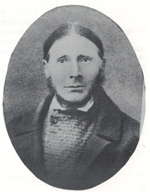

Född 1894-08-09 i Spångakil, Ornunga (P).
Död 1992 i Hålegården 1, Hägrunga, Algutstorp (P).
Född 1848-03-29 i Spångakil, Ornunga (P).
Död 1925.
Rallare
Född 1814-10-05 i Lyckorna.
Död 1876 i Spångakil, Ornunga (P).
FFF Carl Larsson.
FFM Elin .
Född 1819-09-21 i Ryagärde, Ornunga (P) [1] .
Död 1889-01-21 i Spångakil, Ornunga (P).
FMF Lars Svensson.
Född 1783-04-15.
Död 1855-05-24 i Ryagärde, Ornunga (P).
FMM Annica Olofsdotter.
Född 1782-07-21 i Västergården, Gundlered, Ornunga (P).
Född 1852-11-19 i Göransgården, Grude (P).
Död 1935-10-26 i Spångakil, Ornunga (P).

MF Petter Andersson.
Född 1816-10-13 i Grude (P) [2] .
Död 1877-01-20 i Göransgården, Grude (P) [2] .
MFF Anders Jonasson.
Född 1788 i Grude (P) [3] .
MFM Kjerstin Persdotter.
Född 1785 i Grude (P) [3] .

MM Annicka Andersdotter.
Född 1829-10-04 i Kärrtorp, Jällby (P).
MMF Anders Pettersson.
Född 1799-03-21 i Ölanda Vesterg [2] .
Död 1858-10-09 i Kärrtorp, Jällby (P) [2] .
MMM Britta Hansdotter.
Född 1801-04-21 i Kärrtorp, Jällby (P) [2] .
Död 1876-03-31 i Kärrtorp, Jällby (P) [2] .